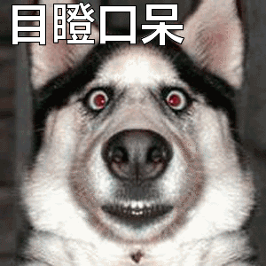

为什么一个男人会爱上一个女人呢？或者说，为什么一个女人会爱上一个男人呢？
叔本华说：“是因为你们俩结合，生下的后代各方面会更优秀，所以大自然安排你爱上了ta。”
“比如男人很多都喜欢长得漂亮、身材好的女性，那是因为跟她结合，你们的孩子也会漂亮、帅、身材好，所以大自然安排你对她怦然心动”
“比如女人喜欢高大帅气聪明的男性，因为你跟他结合后，你们的孩子也会高大、帅气、漂亮、聪明，所以大自然安排你对他无法自拔”
于是你要说了，我喜欢的ta不是那种特别漂亮特别帅的，为啥大自然安排我喜欢ta？
“那是因为ta的一些特质跟你结合正好可以产生更优秀的后代，比如你温柔但怯懦，ta勇敢阳光，生下的后代可能即温柔又勇敢阳光（大概这意思）”
“而且这些都是大自然安排的，所以有些人会说：我都不知道我为啥喜欢ta、爱情不需要理由！”
“其实是大自然骗了你，大自然的目的是种族延续，优良基因传下去，所以搞了个爱情这样的东西，让你们结合，还让你们觉得是自己发自内心的喜欢对方，其实爱情只是大自然种族延续的手段罢了”
听了叔本华的话，小廖突然觉得好忧伤，但好像又挺有道理，一时无言以对，目瞪口呆
啥，你问我啥是目瞪口呆？点击下面的图片试试！
